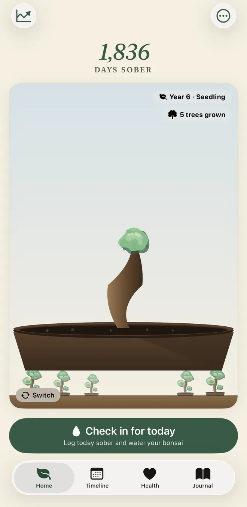
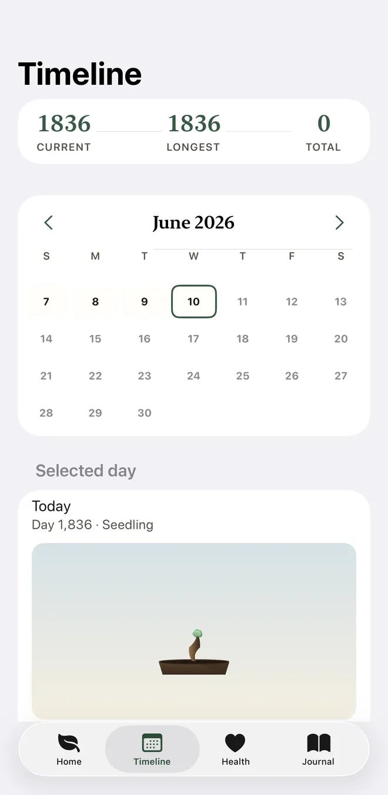
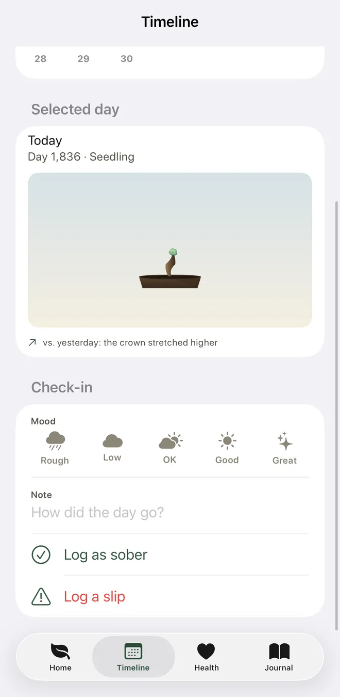
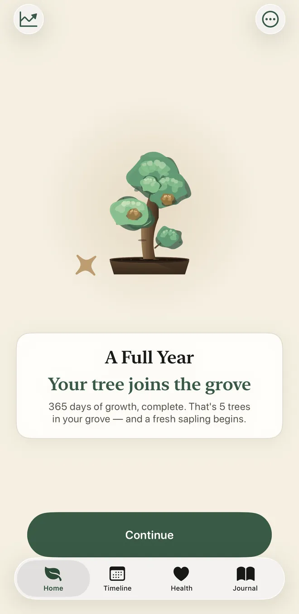
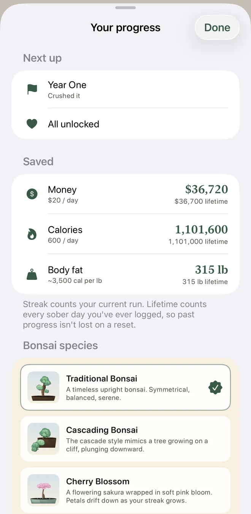
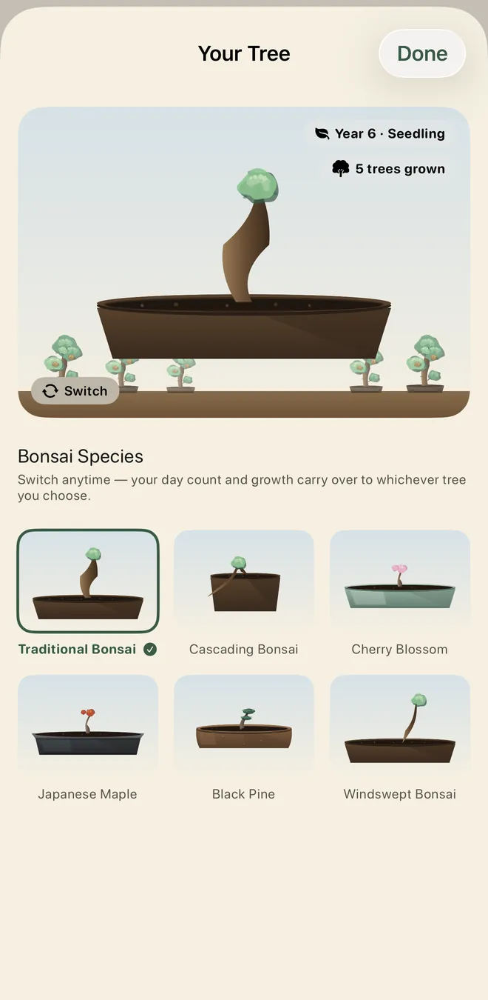

A sobriety day counter, with a garden that grows
Sober is a free sobriety day counter app for iPhone and Apple Watch, with a virtual garden, health milestones, a journal, and more, all private and on your device.
iPhone · Apple Watch · Widgets
Sober is a free sobriety day counter app for iPhone and Apple Watch, with a virtual garden, health milestones, a journal, and more, all private and on your device.
iPhone · Apple Watch · Widgets






The counter, calendar, garden, widgets, Watch app and craving breathing are free. Bloom+ adds your patterns, projections, the full timeline and the journal.
See how many days since you started, your next milestone, and upcoming health benefit, all on one screen.
A virtual garden that grows from seed to ancient tree as your streak continues. Water it daily with your check-in.
13 health benefits backed by NIAAA, CDC, and AHA. See blood sugar stabilize at 24h, liver health improve at 30 days, and lower long-term risk after a year.
See all 13 benefits with detailed explanations and source links. See the complete picture of your body's recovery.
Included with Pro
A color-coded calendar showing sober (green), not sober (red), and yet to check in (gray). Track your success rate over time.
Daily reflection prompts, freeform writing, and a feeling picker. All entries are private and stored locally on your device.
Included with Pro
9 milestones across time (First Step, Quarter Master, Year One) and check-in streaks (Perfect Week, Diamond Discipline).
See how much money and how many calories you've kept since starting your journey. Set your own daily cost and calorie estimates.
Your day count on your Home Screen, your Lock Screen and your Apple Watch.
Yes. Sober is built with privacy first. No accounts, no analytics, no ads. Your sobriety data never leaves your device; RevenueCat only checks purchase status. All health information stays local in SwiftData.
Privacy Policy →How it's built.
Most sobriety apps make you fill out forms and stare at a plain number. I wanted a garden that grows every time you check in, so progress is something you can see.
Sober is a day counter and a virtual garden in one. Check in once a day, watch your bonsai grow from seed toward a full grove, and see the health benefits and money you're getting back along the way. No signup, no cloud, no relapse shaming. The core app is free.
An optional upgrade for people who want the full picture. Monthly, yearly, or a one-time lifetime purchase is available, with a 7-day free trial on subscriptions. Prices are shown in the app before you buy and vary by region.
Full health timeline. All 13 recovery benefits (backed by NIAAA, CDC, and AHA sources) with detailed explanations. The free tier shows the first 5.
Journal with prompts. Daily reflection prompts, freeform writing, and a feeling picker. Entries stay private and local, same as everything else.
Your craving patterns. When cravings hit, what sets them off, and a short plan for each common trigger.
Projections and more species. Money, calories and milestones projected to your goal date and a year ahead, plus more bonsai species.
| Platform | iOS 17+, watchOS 10+ |
| Language | Swift 6 with strict concurrency |
| Framework | SwiftUI · SwiftData · StoreKit |
| Data | No accounts, no HealthKit, entirely on-device |
| Storage | SwiftData, local only |
| Widgets | Home Screen (small, medium), Lock Screen (circular, rectangular, inline) |
The garden. Every check-in adds visible, cumulative growth to the tree.
No relapse shame. Missing a check-in or logging a slip doesn't punish you or reset your garden to zero.
Apple Watch. The Watch app shows your day count, start date and tree stage, and it keeps counting from your start date even when the phone app stays closed.
Privacy. No accounts, no analytics, no ads. RevenueCat only checks purchase status. Sobriety data is sensitive, so the app never asks who you are or sends anything off-device.
Quick answers about the sobriety day counter.
Yes. Sober: Sobriety Day Counter is free to download and use. The day counter, daily check-in, calendar, basic garden, widgets, Apple Watch app, craving breathing, money and calories kept so far, and first five health milestones are free. The optional Bloom+ upgrade adds your craving patterns, goal projections, the full health timeline, the journal and more bonsai species.
Set your sobriety start date, and Sober counts the days for you and shows your next milestone. Check in once a day to log your mood, add a note, and water your bonsai.
Yes. Your day count appears in three Lock Screen widgets and two Home Screen widgets, and the Apple Watch app shows your count, start date and tree stage. All of them are free.
You log a slip yourself, and the day counter restarts from that date. The garden keeps part of its growth, so the app does not wipe out your progress or shame you.
No account is needed. Sober has no ads or analytics, and your data stays on your device.
If you want a simple private day counter, yes. Sober has no account, no community feed and no ads, and it pairs the counter with a garden that grows with each daily check-in.
No. Sober is a tracking tool and does not diagnose or treat anything. The timeline summarizes general health milestones from NIAAA, CDC and AHA sources, so talk to a doctor about your own situation.
Free on the App Store and Google Play. No account required. Upgrade to Bloom+ anytime.